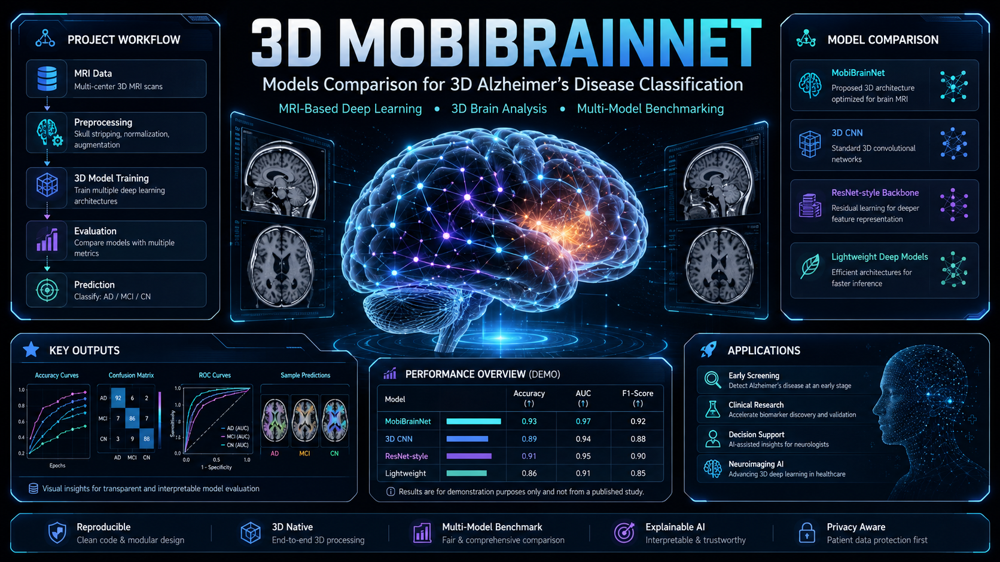

3D-MobiBrainNet
Multi-class Alzheimer's disease classification from 3D brain MRI, fusing axial, coronal and sagittal planes — published in Ain Shams Engineering Journal (Elsevier).


Overview
This peer-reviewed research implements volumetric brain MRI analysis to distinguish Alzheimer's disease, mild cognitive impairment and cognitively normal states. Rather than analyzing isolated 2D slices, the network processes three anatomical planes — axial, coronal and sagittal — through separate feature branches, then fuses them to preserve spatial context while staying computationally efficient.
Purpose — Why This Research Matters
Most Alzheimer's imaging models only do binary classification (disease vs. no disease) from single 2D slices, throwing away 3D spatial context that matters for early staging. Catching mild cognitive impairment — not just full-blown disease — is what actually enables timely intervention. 3D-MobiBrainNet was built to classify all three clinically relevant stages from true volumetric MRI, while staying lightweight enough for practical, real-world inference.
Animated Architecture Flow
Key Features
Benefits
Distinguishes MCI from full Alzheimer's, not just disease vs. healthy.
Multi-plane fusion keeps spatial context 2D-slice models lose.
Far fewer parameters than comparable 3D CNNs, easing real deployment.
Published in Ain Shams Engineering Journal (Elsevier) — independently validated.
Results
Evaluated on the Alzheimer's Disease Neuroimaging Initiative (ADNI) 3D MRI dataset.
Publication
Journal: Ain Shams Engineering Journal (Elsevier) · Year: 2025 · Volume: 16 · Issue: 11 · Article: 103714
DOI: 10.1016/j.asej.2025.103714 · Open Access, Peer-Reviewed